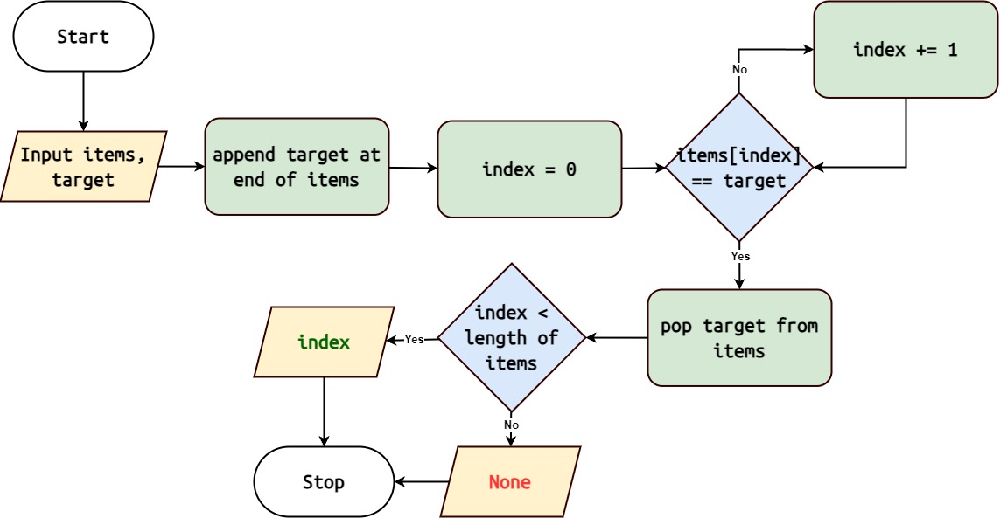

Sentinel Linear Search
algorithms.sentinel_linear_search()
The Sentinel Linear Search algorithm is a variation of the Linear Search algorithm that uses a sentinel value to optimize the search process.
Algorithm Overview
{kind=link}
Append the target element at the end of the collection as a sentinel.
Start with the first element of the collection.
Check if the current element is equal to the target element.
If a match is found, return the index of the current element.
If the current element is the sentinel (indicating the end of the collection) , return None.
Otherwise, move to the next element and repeat steps 3-5.
Note
Sentinel Linear Search has a time complexity of O(n), where ‘n’ is the number of elements in the collection.
Implementation in Python
Here’s a Python implementation of the Sentinel Linear Search algorithm:
1 def sentinel_linear_search(target: Any, items: List[Any]) -> Optional[int]:
2 n = len(items)
3 items.append(target) # Append target as a sentinel
4 index = 0
5 while items[index] != target:
6 index += 1
7 arr.pop() # Remove sentinel
8 if index < n:
9 return index
10 return None
Usage
To use the sentinel_linear_search function:
1 from algorithms import sentinel_linear_search
2
3
4 arr = [4, 2, 7, 1, 9, 5]
5 target = 7
6 index = sentinel_linear_search(arr, target)
7 if index:
8 print(f"Element {target} found at index {index}")
9 else:
10 print(f"Element {target} not found")